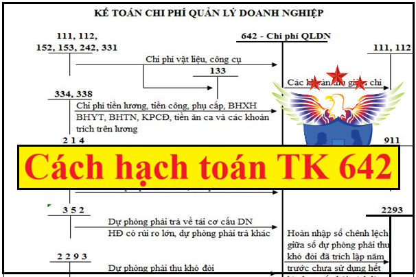

Cách hạch toán chi phí quản lý doanh nghiệp - Tài khoản 642 áp dụng chế độ kế toán theo Thông tư 99 mới nhất 2026, cách hạch toán chi phí bán hàng, chi phí quản lý doanh nghiệp, hạch toán kết chuyển chi phí quản lý kinh doanh cuối kỳ.
1. Tài khoản 642 - Chi phí quản lý kinh doanh
Nguyên tắc kế toán
a) Tài khoản này dùng để phản ánh các chi phí quản lý chung của doanh nghiệp gồm các chi phí về lương nhân viên bộ phận quản lý doanh nghiệp (tiền lương, tiền công, các khoản phụ cấp,...); bảo hiểm xã hội, bảo hiểm y tế, kinh phí công đoàn, bảo hiểm thất nghiệp của nhân viên quản lý doanh nghiệp; chi phí vật liệu văn phòng, công cụ lao động, khấu hao TSCĐ dùng cho quản lý doanh nghiệp; tiền thuê đất của bộ phận quản lý, lệ phí môn bài; khoản trích lập dự phòng nợ phải thu khó đòi; dự phòng tái cơ cấu doanh nghiệp; dịch vụ mua ngoài (điện, nước, điện thoại, fax, bảo hiểm tài sản, cháy nổ...); chi phí bằng tiền khác (tiếp khách, hội nghị khách hàng...).
b) Các khoản chi phí quản lý doanh nghiệp không được coi là chi phí tính thuế TNDN theo quy định của Luật thuế nhưng có đầy đủ hóa đơn chứng từ và đã hạch toán đúng theo Chế độ kế toán thì không được ghi giảm chi phí kế toán mà chỉ điều chỉnh trong quyết toán thuế TNDN để làm tăng số thuế TNDN phải nộp.
c) Tài khoản 642 - Chi phí quản lý doanh nghiệp được mở chi tiết theo từng nội dung chi phí theo quy định. Tùy theo yêu cầu quản lý của từng ngành, từng doanh nghiệp, Tài khoản 642 - Chi phí quản lý doanh nghiệp có thể được mở thêm các tài khoản cấp 2 để phản ánh các nội dung chi phí thuộc chi phí quản lý ở doanh nghiệp. Cuối kỳ, doanh nghiệp kết chuyển chi phí quản lý doanh nghiệp vào bên Nợ Tài khoản 911 - Xác định kết quả kinh doanh để xác định kết quả kinh doanh.
Chú ý: Các khoản chi phí bán hàng, chi phí quản lý doanh nghiệp không được coi là chi phí được trừ theo quy định của Luật thuế TNDN nhưng có đầy đủ hóa đơn chứng từ và đã hạch toán đúng theo Chế độ kế toán thì không được ghi giảm chi phí kế toán mà chỉ điều chỉnh trong quyết toán thuế TNDN để làm tăng số thuế TNDN phải nộp.
Xem thêm: Các khoản chi phí không được trừ khi tính thuế TNDN
2. Kết cấu và nội dung Tài khoản 642 - Chi phí quản lý doanh nghiệp
|
Bên Nợ |
Bên Có |
|
|
- Các chi phí quản lý doanh nghiệp thực tế phát sinh trong kỳ; - Số dự phòng nợ phải thu khó đòi, dự phòng phải trả tính vào chi phí quản lý doanh nghiệp (Chênh lệch giữa số dự phòng phải lập kỳ này lớn hơn số dự phòng đã lập kỳ trước chưa sử dụng hết); |
- Các khoản được ghi giảm chi phí quản lý doanh nghiệp; - Hoàn nhập dự phòng nợ phải thu khó đòi, dự phòng phải trả tính vào chi phí quản lý doanh nghiệp (chênh lệch giữa số dự phòng phải lập kỳ này nhỏ hơn số dự phòng đã lập kỳ trước chưa sử dụng hết); - Kết chuyển chi phí quản lý doanh nghiệp vào Tài khoản 911 để xác định kết quả kinh doanh. |
|
| Tài khoản 642 không có số dư cuối kỳ. | ||
Tài khoản 642 - Chi phí quản lý doanh nghiệp có 8 tài khoản cấp 2:
- Tài khoản 6421 - Chi phí nhân viên quản lý: Phản ánh các khoản phải trả cho cán bộ nhân viên quản lý doanh nghiệp, như tiền lương, các khoản phụ cấp, bảo hiểm xã hội, bảo hiểm y tế, kinh phí công đoàn, bảo hiểm thất nghiệp,… của Ban Giám đốc, nhân viên quản lý ở các phòng, ban của doanh nghiệp, các khoản khen thưởng, phúc lợi cho nhân viên quản lý trong trường hợp doanh nghiệp không chỉ từ nguồn quỹ khen thưởng, phúc lợi mà hạch toán trực tiếp vào chi phí sản xuất kinh doanh trong kỳ.
- Tài khoản 6422 - Chi phí vật liệu quản lý: Phản ánh chi phí vật liệu xuất dùng cho công tác quản lý doanh nghiệp như văn phòng phẩm... vật liệu sử dụng cho việc sửa chữa TSCĐ, công cụ, dụng cụ,...
- Tài khoản 6423 - Chi phí đồ dùng văn phòng: Phản ánh chi phí dụng cụ, đồ dùng văn phòng, phương tiện làm việc dùng cho công tác quản lý.
- Tài khoản 6424 - Chi phí khấu hao TSCĐ: Phản ánh chi phí khấu hao TSCĐ dùng chung cho công tác quản lý doanh nghiệp như: Nhà cửa làm việc của các phòng ban, kho tàng, vật kiến trúc, phương tiện vận tải truyền dẫn, máy móc thiết bị quản lý dùng trên văn phòng,...
- Tài khoản 6425 - Thuế, phí và lệ phí: Phản ánh chi phí về thuế, phí và lệ phí như: lệ phí môn bài, tiền thuê đất,... và các khoản thuế, phí, lệ phí khác.
- Tài khoản 6426 - Chi phí dự phòng: Phản ánh các khoản dự phòng nợ phải thu khó đòi, dự phòng tái cơ cấu doanh nghiệp,...
- Tài khoản 6427 - Chi phí dịch vụ mua ngoài: Phản ánh các chi phí dịch vụ mua ngoài phục vụ cho công tác quản lý doanh nghiệp như chi phí thuê TSCĐ, chi phí điện, nước,…
- Tài khoản 6428 - Chi phí bằng tiền khác: Phản ánh các chi phí khác thuộc quản lý chung của doanh nghiệp, ngoài các chi phí đã kể trên, như: Chi phí hội nghị, tiếp khách ở bộ phận quản lý, công tác phí, tàu xe, khoản chi cho lao động nữ,...
3. Cách hạch toán Chi phí quản lý kinh doanh một số nghiệp vụ:
|
1. Tiền lương, tiền công, phụ cấp và các khoản khác phải trả cho nhân viên bộ phận quản lý doanh nghiệp, trích bảo hiểm xã hội, bảo hiểm y tế, kinh phí công đoàn, bảo hiểm thất nghiệp, các khoản hỗ trợ khác (như bảo hiểm nhân thọ, bảo hiểm hưu trí tự nguyện...) của nhân viên quản lý doanh nghiệp, ghi: Nợ TK 642 - Chi phí quản lý doanh nghiệp (6421)
Có các TK 334, 338. Xem thêm: Cách hạch toán tiền lương và các khoản trích theo lương 2. Giá trị vật liệu xuất dùng hoặc mua vào sử dụng ngay cho quản lý doanh nghiệp như: Xăng, dầu, mỡ để chạy xe, vật liệu dùng cho sửa chữa TSCĐ chung của doanh nghiệp,... ghi: Nợ TK 642 - Chi phí quản lý doanh nghiệp (6422) Nợ TK 133 - Thuế GTGT được khấu trừ (1331) (nếu có) Có các TK 111, 112, 152, 242, 331,... 3. Trị giá dụng cụ, đồ dùng văn phòng xuất dùng hoặc mua sử dụng ngay không qua kho cho bộ phận quản lý được tính trực tiếp một lần vào chi phí quản lý doanh nghiệp, ghi: Nợ TK 642 - Chi phí quản lý doanh nghiệp (6423) Nợ TK 133 - Thuế GTGT được khấu trừ (nếu có)
Có các TK 111, 112, 153, 331,... Xem thêm: Cách tính phân bổ công cụ dụng cụ 4. Trích khấu hao TSCĐ dùng cho quản lý chung của doanh nghiệp, như: Nhà cửa, vật kiến trúc, kho tàng, thiết bị truyền dẫn,... ghi: Nợ TK 642 - Chi phí quản lý doanh nghiệp (6424)
Có TK 214 - Hao mòn TSCĐ. Xem thêm: Cách tính khấu hao TSCĐ 5. Lệ phí môn bài, tiền thuê đất,... phải nộp Nhà nước, ghi: Nợ TK 642 - Chi phí quản lý doanh nghiệp (6425) Có TK 333 - Thuế và các khoản phải nộp Nhà nước. 6. Lệ phí giao thông, lệ phí qua cầu, phà phải nộp, ghi: Nợ TK 642 - Chi phí quản lý doanh nghiệp (6425) Có các TK 111, 112,...
7. Kế toán dự phòng các khoản nợ phải thu khó đòi tại thời điểm kết thúc kỳ kế toán: - Trường hợp số dự phòng nợ phải thu khó đòi phải trích lập kỳ này lớn hơn số đã trích lập từ kỳ trước chưa sử dụng hết, doanh nghiệp trích lập bổ sung phần chênh lệch, ghi: Nợ TK 642 - Chi phí quản lý doanh nghiệp (6426) Có TK 229 - Dự phòng tổn thất tài sản (2293). - Trường hợp số dự phòng nợ phải thu khó đòi phải trích lập kỳ này nhỏ hơn số đã trích lập từ kỳ trước chưa sử dụng hết, doanh nghiệp hoàn nhập phần chênh lệch, ghi: Nợ TK 229 - Dự phòng tổn thất tài sản (2293) Có TK 642 - Chi phí quản lý doanh nghiệp (6426). 8. Khi trích lập dự phòng phải trả (trừ dự phòng phải trả về bảo hành sản phẩm, hàng hóa, công trình xây dựng) tính vào chi phí quản lý doanh nghiệp, ví dụ như dự phòng tái cơ cấu doanh nghiệp,..., ghi: Nợ TK 642 - Chi phí quản lý doanh nghiệp Có TK 352 - Dự phòng phải trả. - Trường hợp số dự phòng phải trả cần lập ở thời điểm kết thúc kỳ kế toán này nhỏ hơn số dự phòng phải trả đã lập ở thời điểm kết thúc kỳ kế toán trước chưa sử dụng hết thì số chênh lệch được hoàn nhập ghi giảm chi phí, ghi: Nợ TK 352 - Dự phòng phải trả Có TK 642 - Chi phí quản lý doanh nghiệp. 9. Tiền điện thoại, điện, nước mua ngoài phải trả, chi phí sửa chữa TSCĐ một lần với giá trị nhỏ, ghi: Nợ TK 642 - Chi phí quản lý doanh nghiệp (6427) Nợ TK 133 - Thuế GTGT được khấu trừ (nếu có) Có các TK 111, 112, 331, 335,... 10. Kế toán chi phí sửa chữa, bảo dưỡng định kỳ TSCĐ phục vụ cho quản lý doanh nghiệp: - Đối với sửa chữa, bảo dưỡng thường xuyên, căn cứ vào chứng từ có liên quan, ghi: Nợ TK 642 - Chi phí quản lý doanh nghiệp Nợ TK 133 - Thuế GTGT được khấu trừ (nếu có) Có các TK 111, 112,... - Đối với sửa chữa, bảo dưỡng định kỳ, căn cứ vào chứng từ có liên quan, ghi: + Khi chi phí sửa chữa, bảo dưỡng định kỳ TSCĐ thực tế phát sinh, ghi: Nợ TK 2413 - Sửa chữa, bảo dưỡng định kỳ TSCĐ Nợ TK 133 - Thuế GTGT được khấu trừ (nếu có) Có các TK 111, 112, 331,... + Khi công tác sửa chữa, bảo dưỡng định kỳ TSCĐ hoàn thành bàn giao đưa vào sử dụng, ghi: Nợ TK 242 - Chi phí chờ phân bổ Nợ TK 133 - Thuế GTGT được khấu trừ (nếu có) Có TK 2413 - Sửa chữa, bảo dưỡng định kỳ TSCĐ. + Định kỳ, kế toán phân bổ chi phí sửa chữa, bảo dưỡng định kỳ TSCĐ vào chi phí quản lý doanh nghiệp trong từng kỳ, ghi: Nợ TK 642 - Chi phí quản lý doanh nghiệp Có TK 242 - Chi phí chờ phân bổ. 11. Chi phí phát sinh về hội nghị, tiếp khách, chi cho lao động nữ, chi cho nghiên cứu, đào tạo, chi nộp phí tham gia hiệp hội và chi phí quản lý khác, ghi: Nợ TK 642 - Chi phí quản lý doanh nghiệp (6428) Nợ TK 133 - Thuế GTGT được khấu trừ (nếu có) Có các TK 111, 112, 331,... 12. Thuế GTGT đầu vào liên quan đến bộ phận quản lý doanh nghiệp không được khấu trừ nếu được tính vào chi phí quản lý doanh nghiệp, ghi: Nợ TK 642 - Chi phí quản lý doanh nghiệp Có TK 133 - Thuế GTGT được khấu trừ (1331, 1332). 13. Đối với sản phẩm, hàng hóa tiêu dùng nội bộ sử dụng cho mục đích quản lý; Sản phẩm, hàng hóa dùng để biếu, tặng, ghi: Nợ TK 642 - Chi phí quản lý doanh nghiệp Có các TK 155, 156,...
Có TK 3331 - Thuế GTGT phải nộp (nếu có). Xem thêm: Quy định về hàng biếu tặng khách hàng, nhân viên 14. Khi phát sinh các khoản ghi giảm chi phí quản lý doanh nghiệp, ghi: Nợ các TK 111, 112,... Có TK 642 - Chi phí quản lý doanh nghiệp. 15. Tại thời điểm kết thúc kỳ kế toán, kết chuyển chi phí quản lý doanh nghiệp phát sinh trong kỳ vào Tài khoản 911 để xác định kết quả kinh doanh, ghi: Nợ TK 911 - Xác định kết quả kinh doanh Có TK 642 - Chi phí quản lý doanh nghiệp. |
Kế toán Diệu Tâm Chúc các bạn thành công! Chuyên dạy làm kế toán thực tế chuyển sâu, dạy học kế toán thực hành trực tiếp trên chứng từ thực tế: Dạy Lập báo cáo tài chính, Quyết toán thuế thực tế chuyên sâu...
------------------------------------------------
